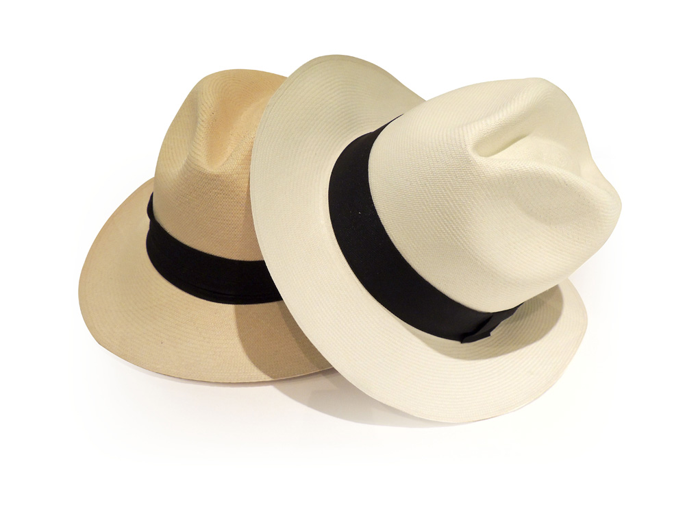
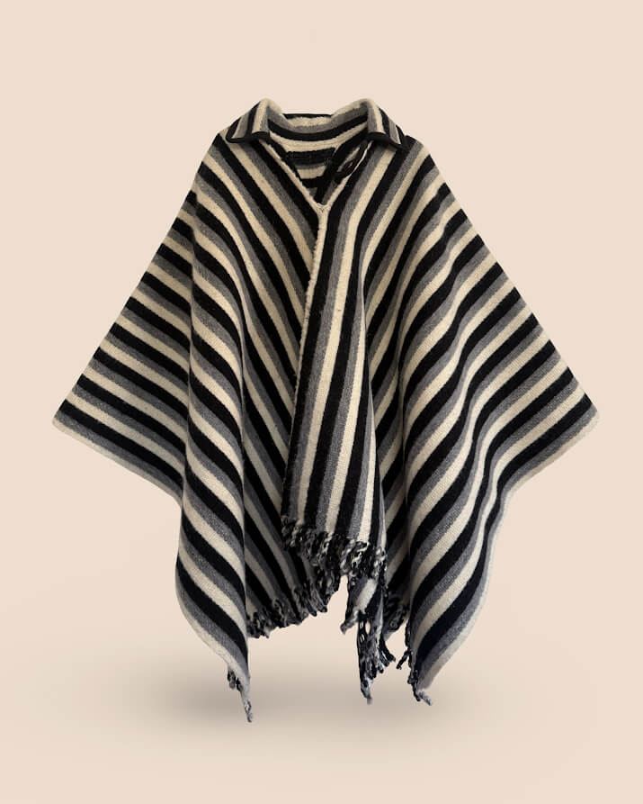
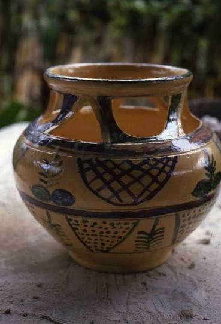
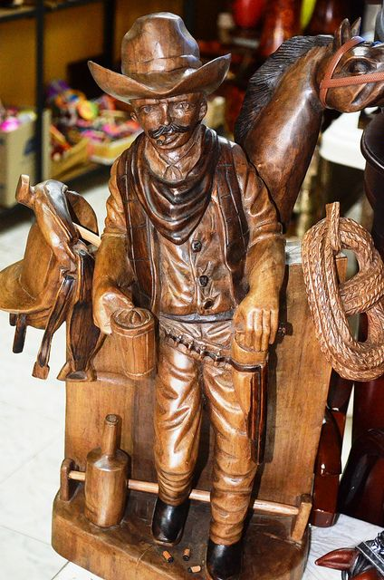

Sombrero de paja toquilla

Sombrero tradicional de paja toquilla, hecho completamente a mano.
Precio: $100.00
Artesanías del Ecuador hechas completamente a mano

Sombrero tradicional de paja toquilla, hecho completamente a mano.
Precio: $100.00

Poncho tradicional fabricado artesanalmente con la técnica ikat.
Precio: $240.00

Vasija de barro fabricada por las manos de hábiles alfareros.
Precio: $7.00

Escultura tallada artesanalmente en madera de cedro.
Precio: $235.00
| Artesanía | Material | Precio base | Costo de envío nacional |
|---|---|---|---|
| Sombrero de paja toquilla | Paja toquilla | $100.00 | $5.00 |
| Poncho tradicional | Lana de oveja | $240.00 | $8.00 |
| Vasija de barro | Barro cocido | $7.00 | $4.00 |
| Escultura de madera | Madera de cedro | $235.00 | $10.00 |
¿Llevas tiempo buscando una pieza única? ¡No busques más! Nosotros la hacemos por ti. Envíanos tus datos y una imagen de referencia.
Selecciona una pregunta para ver la respuesta.
Los envíos a otras provincias se realizan todos los lunes y jueves a las 10:00.
Entre 2 y 4 días hábiles en ciudades principales, y hasta 7 días en zonas rurales.
Depende del producto. Puedes ver el costo de cada uno en la tabla de precios.
Entre 2 y 4 semanas, según la pieza. Puedes solicitarlo en la sección de pedidos personalizados.